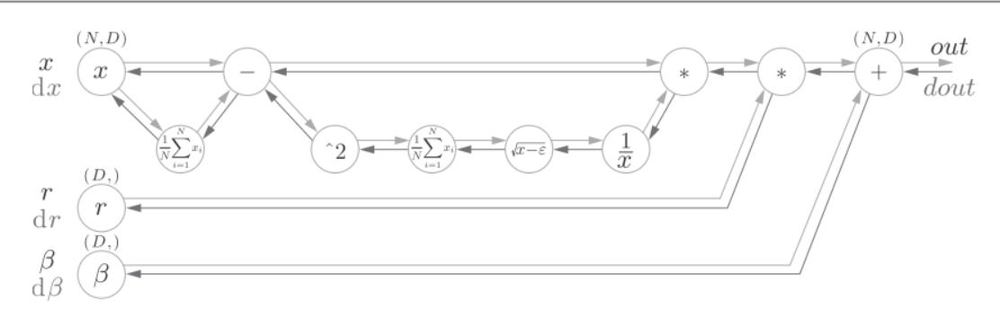

可以通过设置合适的权重值, 增加激活值分布的广度. 通过Batch Normalization也可以强制性地调整激活值的分布.它的主要作用是:
- 可以加快学习速度
- 不那么依赖初始值
- 抑制过拟合
Batch Norm是放在Affine层之后. 以mini-batch为单位, 按mini-batch进行正规化. 就是进行数据分布的均值0, 方差为1的正规化.
μB←m1i=1∑mxi
σB2←m11=1∑m(xi−μB)2
x^i←σB2+ϵxi−μB
对mini-batch的m个输入数据的集合 B=x1,x2,...,xm,求均值μB和方差σB2. 然后, 对输入数据进行均值为0, 方差为1的正规化.
接着, BatchNorm层会对正规化后的数据进行缩放和平移的变换:
yi←γx^i+β
γ和β是参数, 一开始γ=1,β=0, 然后通过学习调整到合适的值.
下图是BatchNorm的正向传播:
